Chapter 3 Sampling the imaginary
3.0.1 Probabilities vs. Frequency counts
Vampires in the population
Probabilities
There is a blood test that can correctly identify a vampire 95% of the time. Or mathematically, Pr(positive|vampire) = 0.95. 1% of the time the test gives a false positive or Pr(positive|mortal) = 0.01. Also, vampires are rare in the population only making up 0.1% of the population so, Pr(vampire) = 0.001
If someone tests poisitve, what is the probability that they are actually a vampire?
Using Bayes’ theorem, Pr(vampire|positive) can be inverted as:
\[\begin{equation} \text{Pr(vampire|positive)} = \frac{\text{Pr(positive|vampire)} \times \text{Pr(vampire)} {\text{Pr(positive)}} \end{equation}\]
Here, Pr(positive) is the average probability of a positive test result or:
\begin{eqaution} = + (1 - ) \end{equation}
Pr_Positive_Vampire <- 0.95
Pr_Positive_Mortal <- 0.01
Pr_Vampire <- 0.001
Pr_Positive <- Pr_Positive_Vampire * Pr_Vampire + Pr_Positive_Mortal * (1 - Pr_Vampire)
(Pr_Vampire_Positive <- Pr_Positive_Vampire * Pr_Vampire / Pr_Positive)## [1] 0.08683729There is an 8.7% chance that a positive test result is actually a vampire.
Frequency counts
- In 100,000 people, 100 are vampires
- of the 100 vampires, 95 will test positive
- of the 99,900 mortals, 999 will test positive
Pr_Positive_Vampire <- 95 / 100
Pr_Positive_Mortal <- 999 / 99900
Pr_Vampire <- 100 / 100000
Pr_Positive <- 95 + 999
(Pr_Vampire_Positive <- Pr_Positive_Vampire * 100 / Pr_Positive)## [1] 0.08683729OR:
Pr_Positive_Vampire <- 95 #positive results from vampires
Pr_Positive <- 95 + 999 #all positive results
(Pr_Vampire_Positive <- Pr_Positive_Vampire / Pr_Positive)## [1] 0.086837293.1 Sampling from a grid-approximate posterior
Let’s recreate the grid approximation for the globe tossing example:
p_grid <- seq(from = 0, to = 1, length.out = 1000) #create 1000 values between 0 and 1
prob_p <- rep(1, 1000) #the uniform prior of 1
prob_data <- dbinom(6, size = 9, prob = p_grid) #The observed tosses (data)
posterior <-prob_data*prob_p #calculate the posterior
posterior <-posterior/sum(posterior) #standardize by dividing by the sumLet’s pull some samples from our posterior (n = 10000)
samples <- sample(p_grid, prob = posterior, size = 1e4, replace = TRUE) #notice replace set to true as there are only 1000 values in p_grid
#find the mode of your samples
getmode <- function(x) {
uniqv <- unique(x)
uniqv[which.max(tabulate(match(x, uniqv)))]
}
samples_mode <- getmode(samples)And plot them
plot(samples) #left panel of figure 3.1
abline(h = samples_mode, col = 'red')
View the samples as a density
plot(density(samples), main = "Density of samples from posterior")
polygon(density(samples), col = 'black', border = 'blue')
abline(v = samples_mode, col = 'red')
#library(rethinking)
#dens(samples)3.2 Sampling to summarize
Common questions about your posterior: 1. intervals of defined boundaries 2. intervals of defined probability mass 3. point estimates
3.2.1 Intervals of defined boundaries
What is the posterior probability that the proportion of water is >0.5?
sum(posterior[p_grid < 0.5])## [1] 0.1718746about 17%
Doing the same using the samples from the posterior
sum(samples < 0.5) / 1e4 #divide by the number of samples you gathered## [1] 0.1729what about between 0.5 and 0.75?
sum(samples > 0.5 & samples < 0.75) / 1e4## [1] 0.6065Recreating figure 3.2 (upper left panel)
library(ggplot2)
library(dplyr)
df <- tibble(p_grid, posterior)
df %>% ggplot(aes(x = p_grid)) +
geom_line(aes(y = posterior)) +
geom_ribbon(data = df %>% filter(p_grid < 0.5),
aes(ymin = 0, ymax = posterior)) +
labs(x = "proportion of water (p)",
y = "density") +
theme_bw()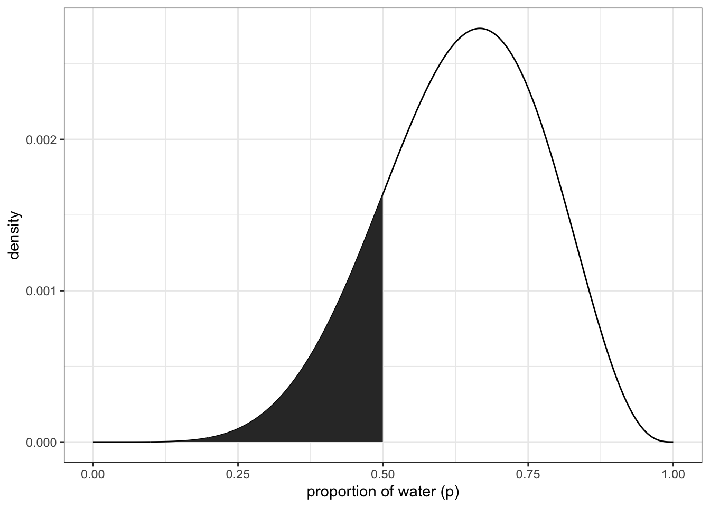 upper right panel
df %>% ggplot(aes(x = p_grid)) +
geom_line(aes(y = posterior)) +
geom_ribbon(data = df %>% filter(p_grid < 0.75 & p_grid > 0.5),
aes(ymin = 0, ymax = posterior)) +
labs(x = "proportion of water (p)",
y = "density") +
theme_bw()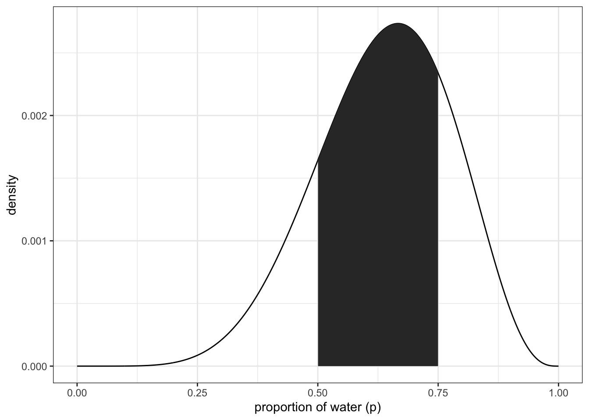
3.2.2 intervals of defined mass
finding the lower 80% of the probability mass using samples
(q_80 <- quantile(samples, 0.8))## 80%
## 0.7607608finding the middle 80% (10-90%)
(q_10_90 <- quantile(samples, c(0.1, 0.9)))## 10% 90%
## 0.4474474 0.8108108Bottom panels to figure 3.2 lower left:
df %>% ggplot(aes(x = p_grid)) +
geom_line(aes(y = posterior)) +
geom_ribbon(data = df %>% filter(p_grid < q_80),
aes(ymin = 0, ymax = posterior)) +
annotate(geom = 'text', x = 0.25, y = 0.0025,
label = 'lower 80%') +
labs(x = "proportion of water (p)",
y = "density") +
theme_bw()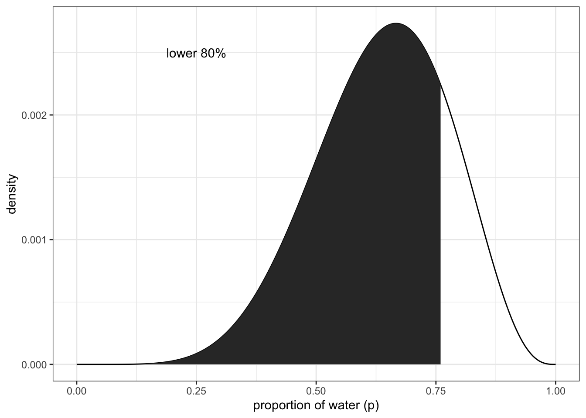
df %>% ggplot(aes(x = p_grid)) +
geom_line(aes(y = posterior)) +
geom_ribbon(data = df %>% filter(p_grid > q_10_90[1] & p_grid < q_10_90[2]),
aes(ymin = 0, ymax = posterior)) +
annotate(geom = 'text', x = 0.25, y = 0.0025,
label = 'middle 80%') +
labs(x = "proportion of water (p)",
y = "density") +
theme_bw()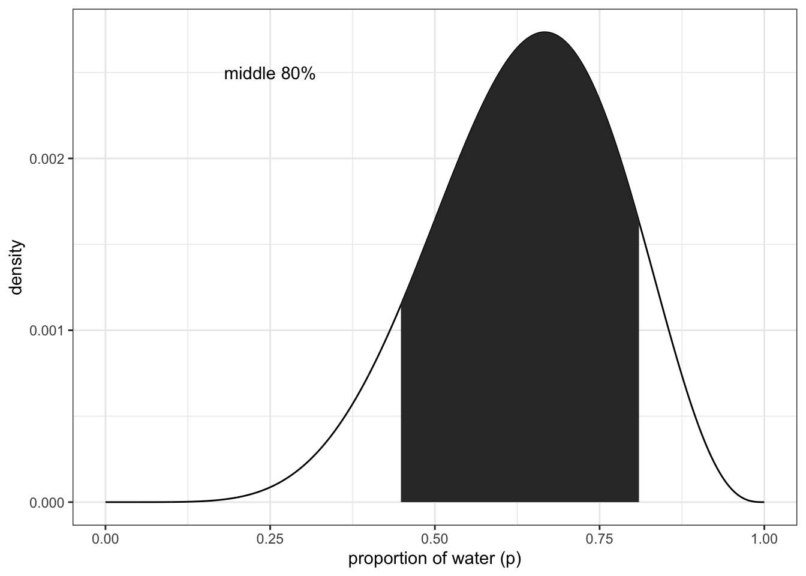
example of three tosses and three water observations:
p_grid <- seq(from = 0, to = 1, length.out = 1000)
prior <- rep(1, 1000)
likelihood <- dbinom(3, size = 3, prob = p_grid)
posterior <- likelihood * prior
posterior <- posterior / sum(posterior)
samples <- sample(p_grid, size = 1e4, replace = TRUE, prob = posterior)Getting the 50% interval
quantile(samples, c(0.25, 0.75))## 25% 75%
## 0.7057057 0.9299299#PI(samples, prob = 0.5) #rethinking packageTidybayes package:
library(tidybayes)## Warning: package 'tidybayes' was built under R version 4.1.2##
## Attaching package: 'tidybayes'## The following objects are masked from 'package:brms':
##
## dstudent_t, pstudent_t, qstudent_t, rstudent_tmedian_qi(samples, .width = 0.5)## y ymin ymax .width .point .interval
## 1 0.8418418 0.7057057 0.9299299 0.5 median qiNotice that all methods above give us the same interval from ~70 - ~93 With tidybayes, you can also look for multiple intervals at once:
median_qi(samples, .width = c(0.5, 0.8, 0.99))## y ymin ymax .width .point .interval
## 1 0.8418418 0.7057057 0.9299299 0.50 median qi
## 2 0.8418418 0.5685686 0.9749750 0.80 median qi
## 3 0.8418418 0.2792743 0.9989990 0.99 median qiFinding the Highest Posterior Density Interval (HPDI)
#HPDI(samples, prob = 0.5) #rethinkingmode_hdi(samples, .width = 0.5) #tidybayes## y ymin ymax .width .point .interval
## 1 0.9565123 0.8418418 1 0.5 mode hdiNote: you can get just the points of refernce by using qi() for quantiles and hdi() for highest density intervals. Useful for plotting
recreate figure 3.3 left panel
df <- tibble(p_grid, posterior)
df %>%
ggplot(aes(x = p_grid)) +
geom_ribbon(data = df %>% filter(p_grid > qi(samples, .width = 0.5)[1] &
p_grid < qi(samples, .width = 0.5)[2]),
aes(ymin = 0, ymax = posterior)) +
geom_line(aes(y = posterior)) +
labs(subtitle = '50% Percentile interval',
x = 'proportion of water (p)',
y = 'density')+
theme_bw()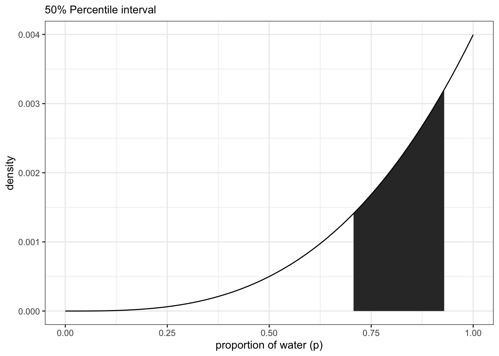 right panel
df %>%
ggplot(aes(x = p_grid)) +
geom_ribbon(data = df %>% filter(p_grid > hdi(samples, .width = 0.5)[1] &
p_grid < hdi(samples, .width = 0.5)[2]),
aes(ymin = 0, ymax = posterior)) +
geom_line(aes(y = posterior)) +
labs(subtitle = '50% HPDI',
x = 'proportion of water (p)',
y = 'density')+
theme_bw()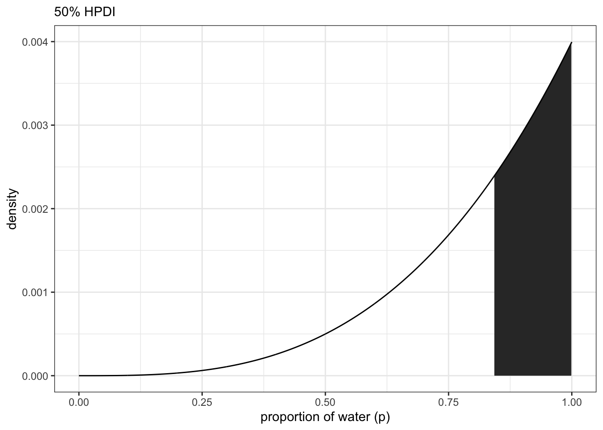
3.2.3 Point estimates
How to get a single useful (?) point estimate for your parameter. First option is the maximum a posteriori (MAP).
p_grid[which.max(posterior)] ## [1] 1With samples:
Mode(samples) #tidybayes## [1] 0.9565123#chainmode(samples, adj = 0.01) #rethinkingwhat about mean or median?
mean(samples)## [1] 0.801547median(samples)## [1] 0.8418418Visualize the mean, median, and mode (figure 3.4)
- create a small data frame
(
point_estimates <-
bind_rows(
mean_qi(samples),
median_qi(samples),
mode_qi(samples)
) %>%
select(y, .point) %>%
mutate(x = y + c(-0.03, 0.03, -0.03),
z = c(0.001, 0.0015, 0.0025))
)## y .point x z
## 1 0.8015470 mean 0.7715470 0.0010
## 2 0.8418418 median 0.8718418 0.0015
## 3 0.9565123 mode 0.9265123 0.0025- plot
df %>%
ggplot(aes(x = p_grid)) +
geom_ribbon(aes(ymin = 0, ymax = posterior),
fill = "grey75") +
geom_vline(xintercept = point_estimates$y) +
geom_text(data = point_estimates,
aes(x = x, y = z, label = .point),
angle = 90) +
labs(x = "proportion of water (p)",
y = "density") +
theme(panel.grid = element_blank())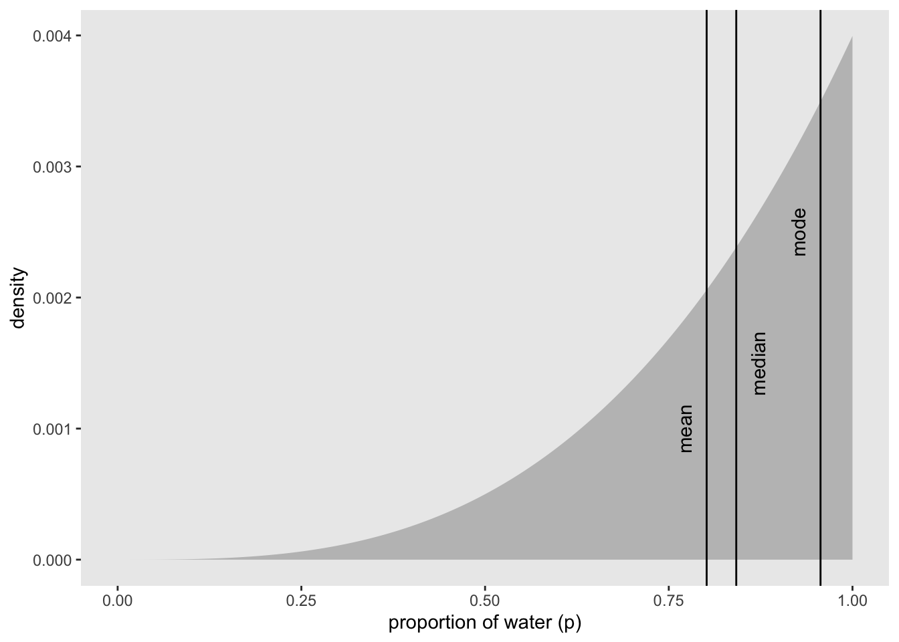
How do we choose between the point estimates? Loss functions
If we assume that p = 0.5 then the expected loss would be:
sum(posterior * abs(0.5 - p_grid))## [1] 0.3128752applying this method to all values of p_grid:
loss <- sapply(p_grid, function(d) sum(posterior * abs(d - p_grid)))Now find the p value with the lowest loss
p_grid[which.min(loss)]## [1] 0.8408408Visualize the loss function
min_loss_x <- p_grid[which.min(loss)]
min_loss_y <- loss[which.min(loss)]
df <- tibble(p_grid, loss)
df %>%
ggplot(aes(x = p_grid)) +
geom_ribbon(aes(ymin = 0, ymax = loss), fill = 'grey75') +
geom_point(aes(x = min_loss_x, y = min_loss_y), size = 3, shape = 21, color = 'blue') +
labs(x = 'decision',
y = 'expected proportional loss') +
theme(panel.grid = element_blank())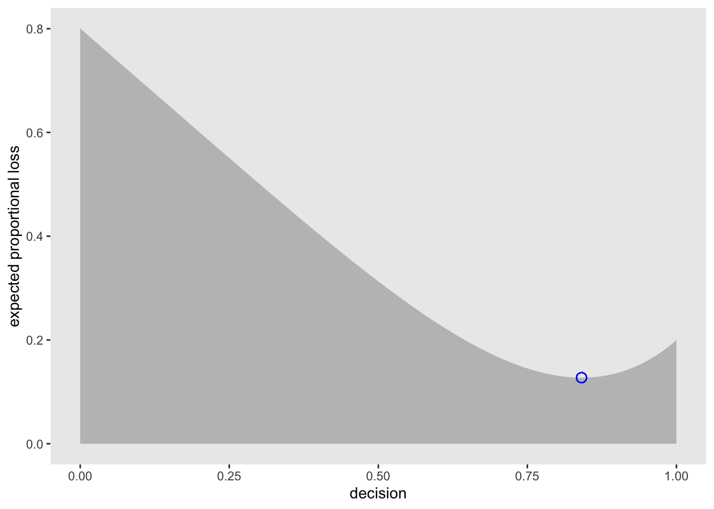
3.3 Sampling to simulate prediction
McElreath’s 5 reasons for posterior simulation:
1. Model design - We can sample from both the posterior and the priors to see how the model behaves
2. Model checking - simulating implied observations to check the model fit
3. Software validation - To double check that the software is running as expected, it helps to simulate observations for a known model and try to recover the parameter values
4. Research design - you can test observations from your hypothesis to test your design. similar to power analysis
5. Forecasting - Estimates can be used to simulate new predictions, for new cases and future observations
3.3.1 Dummy data
From the globe tossing example we can use the likelihood function to create dummy data
\[\begin{equation} \text{Pr}(W|N,p) = \frac{N!}{ W!(N-W)!}p^W\left(1-p\right)^{N-W} \end{equation}\]
If we had two tosses (N = 2), there are 3 possibilities: 0 W, 1W, 2W. So we can compute the probabilities of each with the p value set to 0.7
dbinom(0:2, size = 2, prob = 0.7)## [1] 0.09 0.42 0.49So we see a 9% chance for 0 W, 42% chance of 1 W, and 49% 2 W. So we can sample from the binomial distribution. For example:
rbinom(1 , size = 2, prob = 0.7)## [1] 2This is a single random draw from the described distribution. You can also sample multiples:
rbinom(10, size = 2, prob = 0.7)## [1] 1 1 2 2 1 2 2 2 2 0So we can create a large selection of random draws as dummy data and see if the 0s, 1s, and 2s appear in the same proportions as the probabilities above (9%, 42%, and 49%)
dummy_w <- rbinom(1e5, size = 2, prob = 0.7)
table(dummy_w) / 1e5## dummy_w
## 0 1 2
## 0.08972 0.41847 0.49181Now, let’s update the tosses to match all the previous examples (N = 9).
dummy_w <- rbinom(1e5, size = 9, prob = 0.7)
n <- c(1:1e5)
df_w <- tibble(n, dummy_w)
df_w %>% ggplot(aes(x = dummy_w)) +
geom_histogram(binwidth = 1) +
scale_x_continuous("dummy water count", breaks = seq(from = 0, to = 9, by = 2)) +
ylab("frequency") +
theme(panel.grid = element_blank())
#simplehist(dummy_w, xlab = 'dummy water count') #rethinking3.3.2 Model checking
3.3.2.1 Did the software work?
There actually is no way to check if the software is working correctly. You just have to set yourself an acceptable amount of correspondence between the observations (data) and implied predictions.
3.3.2.2 Is the model adequate?
We need to incorporate the model’s posterior distribution (and its uncertainty) with the implied predictions (and their uncertainty) to create a Posterior Predictive Distribution. To visulize this, we can recreate McElreath’s figure 3.6 below.
# number of grid point in p_grid
n <- 1001
# number of W in 9 tosses
n_w <- 6
# number of tosses
n_t <- 9
# make a table that contains the p_grid, prior, and posterior
df <- tibble(
p_grid = seq(from = 0, to = 1, length.out = n),
#prior is still flat
prior = 1) %>%
mutate(likelihood = dbinom(n_w, size = n_t, prob = p_grid)) %>%
mutate(posterior = (likelihood * prior)/sum(likelihood*prior))
#visualize the posterior distribution with 9 p values to sample from
df %>%
ggplot(aes(x = p_grid)) +
geom_ribbon(aes(ymin = 0, ymax = posterior),
color = 'grey70', fill = 'grey70') +
geom_segment(data = . %>%
filter(p_grid %in% c(seq(from = 0.1, to = 0.9, by = 0.1), 3 / 10)),
aes(xend = p_grid, y = 0, yend = posterior, size = posterior),
color = 'grey35', show.legend = FALSE) +
geom_point(data = . %>%
filter(p_grid %in% c(seq(from = 0.1, to = 0.9, by = 0.1), 3 / 10)),
aes(y = posterior)) +
annotate(geom = 'text', x = 0.08, y = 0.0025, label = 'Posterior probability') +
scale_size_continuous(range = c(0,1)) +
scale_x_continuous('probability of water', breaks = c(0:10) / 10) +
scale_y_continuous(NULL, breaks = NULL) +
theme(panel.grid = element_blank())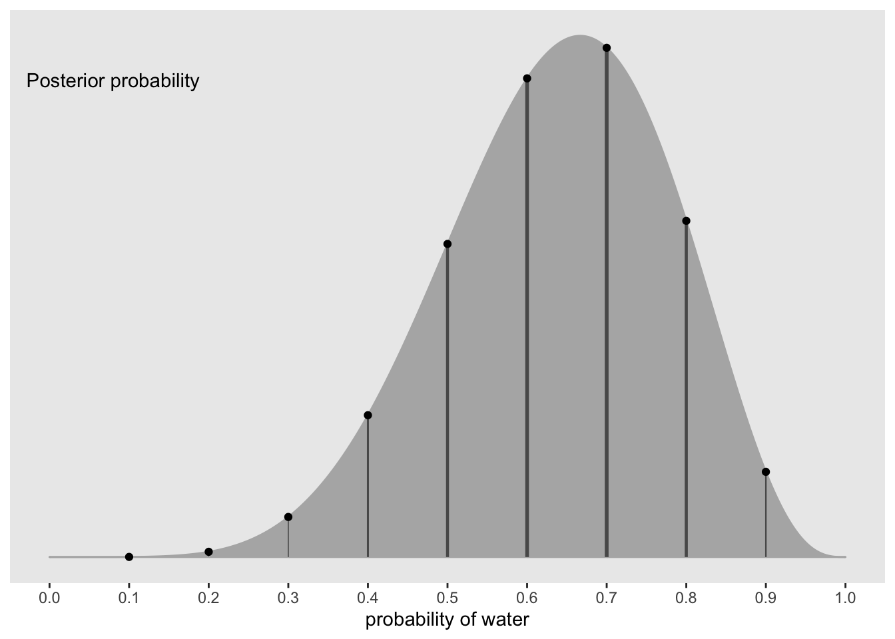
#show the sampling distributions for each p value above
library(tidyr)##
## Attaching package: 'tidyr'## The following object is masked from 'package:rstan':
##
## extract#number of simulated draws
n_draws <- 1e5
#simulation function
simulate_binom <- function(probability){
set.seed(11) #reproducible
rbinom(n_draws, size = 9, prob = probability)
}
# make a table of simulated draws for each probability
df_small <-
tibble(probability = seq(from = 0.1, to = 0.9, by = 0.1)) %>%
mutate(draws = purrr::map(probability, simulate_binom)) %>%
unnest(draws) %>%
mutate(label = str_c("p = ", probability))
#create a histogram for each simulated p value
df_small %>%
ggplot(aes(x = draws)) +
geom_histogram(binwidth = 1, center = 0, color = 'grey90', size = 1/10) +
scale_x_continuous(NULL, breaks = seq(from = 0, to = 9, by = 3)) +
scale_y_continuous(NULL, breaks = NULL) +
labs(subtitle = 'Sampling distributions') +
#coord_cartesian(xlim = 0:9) +
theme(panel.grid = element_blank()) +
facet_wrap(~ label, ncol = 9)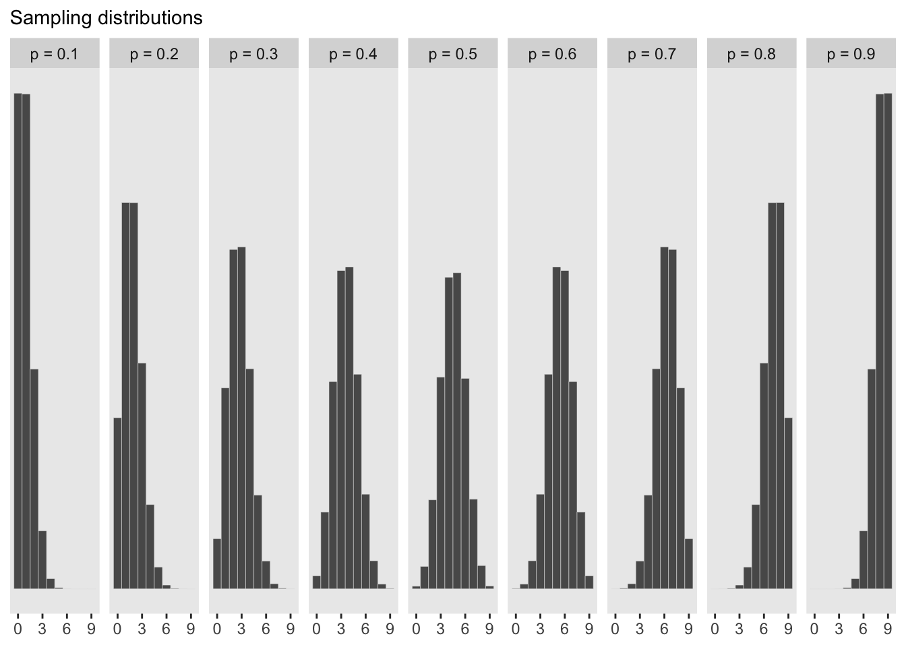
#show the newly calculated PPD
#number of samples
n_samples <- 1e4
#make sure it can be replicated
set.seed(11)
# sample rows of the original dataframe and calculate a W value for each p_grid value
samples <- df %>%
sample_n(size = n_samples, weight = posterior, replace = TRUE) %>%
mutate(w = purrr::map_dbl(p_grid, rbinom, n = 1, size = 9))
#plot the newly created PPD
samples %>%
ggplot(aes(x = w)) +
geom_histogram(binwidth = 1, center = 0, color = 'grey90', size = 1/10) +
scale_x_continuous('number of water samples', breaks = seq(from = 0, to = 9, by = 3)) +
scale_y_continuous(NULL, breaks = NULL) +
ggtitle('Posterior predictive distribution') +
#coord_cartesian(xlim = 0:9, ylim = 0:3000) +
theme(panel.grid = element_blank())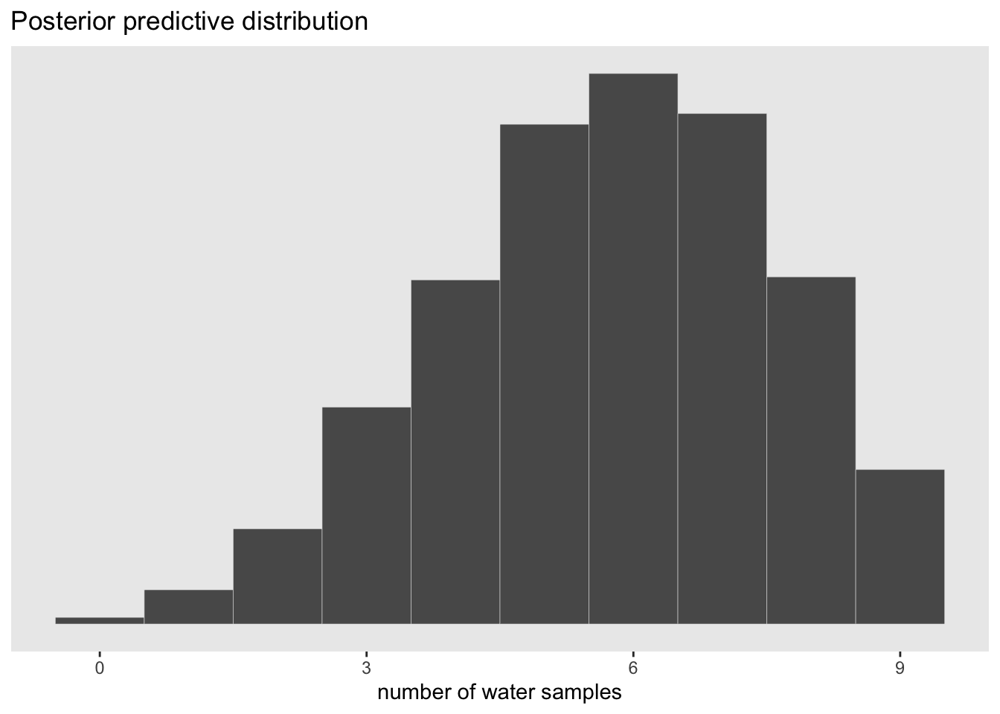
The advantage here is that the predictive distribution is still quite spread out compared to the observed data (w = 6). This is much more informative than if we were to just pick out the mode of the posterior and make implied predictions from that value. This would look like the sampling distribution of p = 0.6 above which would be overconfident.
3.3.3 Practice with brms
Let’s create a PPD with brms
Load the package
library(brms)brms_3 <- brm(data = list(w = 6),
family = binomial(link = 'identity'),
w | trials(9) ~ 1,
prior(beta(1, 1), class = Intercept),
seed = 11,
control = list(adapt_delta = 0.999))## Compiling Stan program...## recompiling to avoid crashing R session## Start sampling##
## SAMPLING FOR MODEL '32a7f51a2d1717ef80875b648bc79f41' NOW (CHAIN 1).
## Chain 1: Rejecting initial value:
## Chain 1: Error evaluating the log probability at the initial value.
## Chain 1: Exception: binomial_lpmf: Probability parameter[1] is -0.232403, but must be in the interval [0, 1] (in 'modeld712023842a_32a7f51a2d1717ef80875b648bc79f41' at line 22)
##
## Chain 1:
## Chain 1: Gradient evaluation took 2.1e-05 seconds
## Chain 1: 1000 transitions using 10 leapfrog steps per transition would take 0.21 seconds.
## Chain 1: Adjust your expectations accordingly!
## Chain 1:
## Chain 1:
## Chain 1: Iteration: 1 / 2000 [ 0%] (Warmup)
## Chain 1: Iteration: 200 / 2000 [ 10%] (Warmup)
## Chain 1: Iteration: 400 / 2000 [ 20%] (Warmup)
## Chain 1: Iteration: 600 / 2000 [ 30%] (Warmup)
## Chain 1: Iteration: 800 / 2000 [ 40%] (Warmup)
## Chain 1: Iteration: 1000 / 2000 [ 50%] (Warmup)
## Chain 1: Iteration: 1001 / 2000 [ 50%] (Sampling)
## Chain 1: Iteration: 1200 / 2000 [ 60%] (Sampling)
## Chain 1: Iteration: 1400 / 2000 [ 70%] (Sampling)
## Chain 1: Iteration: 1600 / 2000 [ 80%] (Sampling)
## Chain 1: Iteration: 1800 / 2000 [ 90%] (Sampling)
## Chain 1: Iteration: 2000 / 2000 [100%] (Sampling)
## Chain 1:
## Chain 1: Elapsed Time: 0.037163 seconds (Warm-up)
## Chain 1: 0.048304 seconds (Sampling)
## Chain 1: 0.085467 seconds (Total)
## Chain 1:
##
## SAMPLING FOR MODEL '32a7f51a2d1717ef80875b648bc79f41' NOW (CHAIN 2).
## Chain 2:
## Chain 2: Gradient evaluation took 1.8e-05 seconds
## Chain 2: 1000 transitions using 10 leapfrog steps per transition would take 0.18 seconds.
## Chain 2: Adjust your expectations accordingly!
## Chain 2:
## Chain 2:
## Chain 2: Iteration: 1 / 2000 [ 0%] (Warmup)
## Chain 2: Iteration: 200 / 2000 [ 10%] (Warmup)
## Chain 2: Iteration: 400 / 2000 [ 20%] (Warmup)
## Chain 2: Iteration: 600 / 2000 [ 30%] (Warmup)
## Chain 2: Iteration: 800 / 2000 [ 40%] (Warmup)
## Chain 2: Iteration: 1000 / 2000 [ 50%] (Warmup)
## Chain 2: Iteration: 1001 / 2000 [ 50%] (Sampling)
## Chain 2: Iteration: 1200 / 2000 [ 60%] (Sampling)
## Chain 2: Iteration: 1400 / 2000 [ 70%] (Sampling)
## Chain 2: Iteration: 1600 / 2000 [ 80%] (Sampling)
## Chain 2: Iteration: 1800 / 2000 [ 90%] (Sampling)
## Chain 2: Iteration: 2000 / 2000 [100%] (Sampling)
## Chain 2:
## Chain 2: Elapsed Time: 0.039711 seconds (Warm-up)
## Chain 2: 0.061793 seconds (Sampling)
## Chain 2: 0.101504 seconds (Total)
## Chain 2:
##
## SAMPLING FOR MODEL '32a7f51a2d1717ef80875b648bc79f41' NOW (CHAIN 3).
## Chain 3: Rejecting initial value:
## Chain 3: Error evaluating the log probability at the initial value.
## Chain 3: Exception: binomial_lpmf: Probability parameter[1] is -0.794659, but must be in the interval [0, 1] (in 'modeld712023842a_32a7f51a2d1717ef80875b648bc79f41' at line 22)
##
## Chain 3:
## Chain 3: Gradient evaluation took 1e-05 seconds
## Chain 3: 1000 transitions using 10 leapfrog steps per transition would take 0.1 seconds.
## Chain 3: Adjust your expectations accordingly!
## Chain 3:
## Chain 3:
## Chain 3: Iteration: 1 / 2000 [ 0%] (Warmup)
## Chain 3: Iteration: 200 / 2000 [ 10%] (Warmup)
## Chain 3: Iteration: 400 / 2000 [ 20%] (Warmup)
## Chain 3: Iteration: 600 / 2000 [ 30%] (Warmup)
## Chain 3: Iteration: 800 / 2000 [ 40%] (Warmup)
## Chain 3: Iteration: 1000 / 2000 [ 50%] (Warmup)
## Chain 3: Iteration: 1001 / 2000 [ 50%] (Sampling)
## Chain 3: Iteration: 1200 / 2000 [ 60%] (Sampling)
## Chain 3: Iteration: 1400 / 2000 [ 70%] (Sampling)
## Chain 3: Iteration: 1600 / 2000 [ 80%] (Sampling)
## Chain 3: Iteration: 1800 / 2000 [ 90%] (Sampling)
## Chain 3: Iteration: 2000 / 2000 [100%] (Sampling)
## Chain 3:
## Chain 3: Elapsed Time: 0.039656 seconds (Warm-up)
## Chain 3: 0.035382 seconds (Sampling)
## Chain 3: 0.075038 seconds (Total)
## Chain 3:
##
## SAMPLING FOR MODEL '32a7f51a2d1717ef80875b648bc79f41' NOW (CHAIN 4).
## Chain 4: Rejecting initial value:
## Chain 4: Error evaluating the log probability at the initial value.
## Chain 4: Exception: binomial_lpmf: Probability parameter[1] is -0.0368002, but must be in the interval [0, 1] (in 'modeld712023842a_32a7f51a2d1717ef80875b648bc79f41' at line 22)
##
## Chain 4: Rejecting initial value:
## Chain 4: Error evaluating the log probability at the initial value.
## Chain 4: Exception: binomial_lpmf: Probability parameter[1] is 1.49284, but must be in the interval [0, 1] (in 'modeld712023842a_32a7f51a2d1717ef80875b648bc79f41' at line 22)
##
## Chain 4:
## Chain 4: Gradient evaluation took 1.2e-05 seconds
## Chain 4: 1000 transitions using 10 leapfrog steps per transition would take 0.12 seconds.
## Chain 4: Adjust your expectations accordingly!
## Chain 4:
## Chain 4:
## Chain 4: Iteration: 1 / 2000 [ 0%] (Warmup)
## Chain 4: Iteration: 200 / 2000 [ 10%] (Warmup)
## Chain 4: Iteration: 400 / 2000 [ 20%] (Warmup)
## Chain 4: Iteration: 600 / 2000 [ 30%] (Warmup)
## Chain 4: Iteration: 800 / 2000 [ 40%] (Warmup)
## Chain 4: Iteration: 1000 / 2000 [ 50%] (Warmup)
## Chain 4: Iteration: 1001 / 2000 [ 50%] (Sampling)
## Chain 4: Iteration: 1200 / 2000 [ 60%] (Sampling)
## Chain 4: Iteration: 1400 / 2000 [ 70%] (Sampling)
## Chain 4: Iteration: 1600 / 2000 [ 80%] (Sampling)
## Chain 4: Iteration: 1800 / 2000 [ 90%] (Sampling)
## Chain 4: Iteration: 2000 / 2000 [100%] (Sampling)
## Chain 4:
## Chain 4: Elapsed Time: 0.039805 seconds (Warm-up)
## Chain 4: 0.027747 seconds (Sampling)
## Chain 4: 0.067552 seconds (Total)
## Chain 4:Posterior summary of the probability of w
posterior_summary(brms_3)['b_Intercept', ] %>%
round(digits = 2)## Estimate Est.Error Q2.5 Q97.5
## 0.63 0.14 0.34 0.88Now we can sample draws with fitted() in the brms package from the posterior
library(purrr)##
## Attaching package: 'purrr'## The following object is masked from 'package:rethinking':
##
## mapf <- fitted(brms_3, summary = FALSE, scale = 'linear') %>%
as_tibble() %>%
set_names('p')## Warning: The `x` argument of `as_tibble.matrix()` must have unique column names if `.name_repair` is omitted as of tibble 2.0.0.
## Using compatibility `.name_repair`.glimpse(f)## Rows: 4,000
## Columns: 1
## $ p <dbl> 0.6109911, 0.5994330, 0.6465488, 0.6851288, 0.5909901, 0.6042266, 0.…As a density:
f %>%
ggplot(aes(x = p)) +
geom_density(fill = 'grey50', color = 'grey50') +
annotate(geom = 'text', x = 0.08, y = 2.5, label = 'Posterior probability') +
scale_x_continuous('probability of water', breaks = c(0, 0.5, 1), limits = 0:1) +
scale_y_continuous(NULL, breaks = NULL) +
theme(panel.grid = element_blank())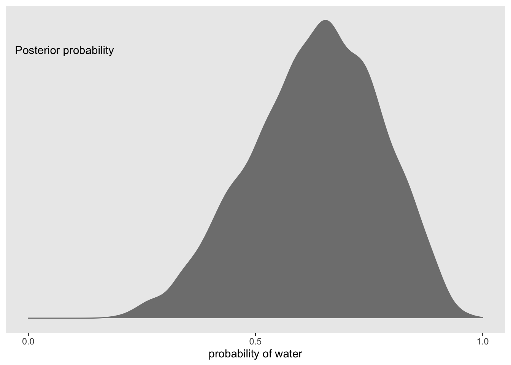 Now we can use this distribution to simulate samples
#make reproducible
set.seed(11)
#simulate samples
f <- f %>%
mutate(w = rbinom(n(), size = n_t, prob = p))
#plot PPD
f %>%
ggplot(aes(x = w)) +
geom_histogram(binwidth = 1, center = 0, color = 'grey90',
size = 1/10) +
scale_x_continuous('number of water samples', breaks = seq(from = 0, to = 9, by =3)) +
scale_y_continuous(NULL, breaks = NULL, limits = c(0, 1200)) +
ggtitle('Posterior predictive distribution') +
theme(panel.grid = element_blank())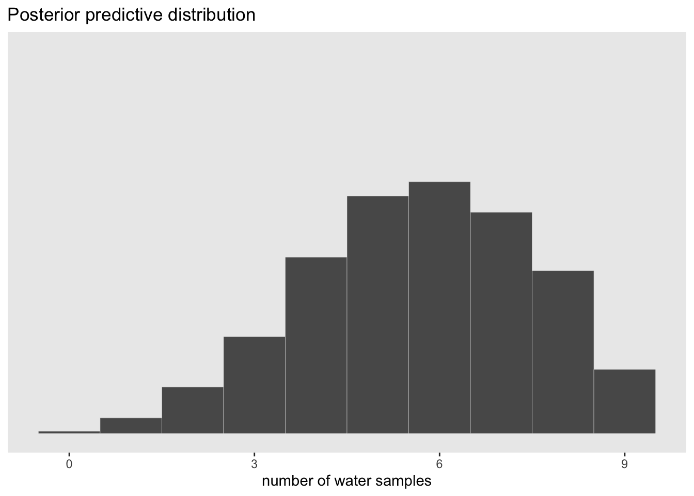